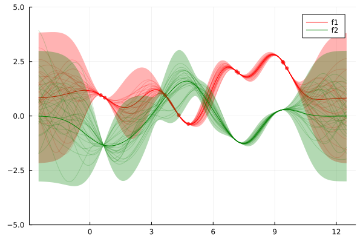
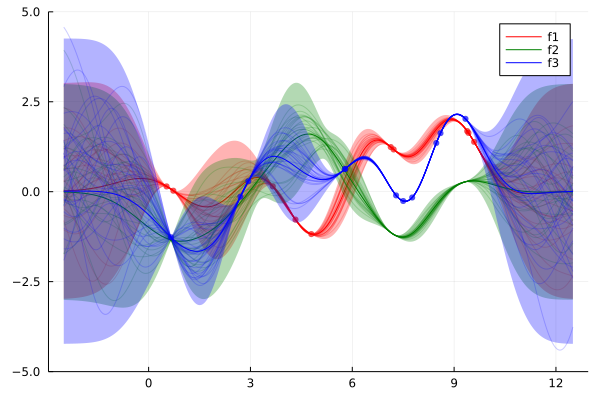

Process Decomposition

You are seeing the HTML output generated by Documenter.jl and Literate.jl from the Julia source file. The corresponding notebook can be viewed in nbviewer.
using AbstractGPs
using Plots
using Random
using SthenoDefine our model. Define a distribution over f₁, f₂, and f₃, where f₃(x) = f₁(x) + f₂(x).
f = @gppp let
f1 = GP(randn(), SEKernel())
f2 = GP(SEKernel())
f3 = f1 + f2
end;Randomly sample N₁ and N₃ locations at which to observe f₁ and f₃ respectively.
rng, N1, N3 = MersenneTwister(123546), 10, 11;
x1 = GPPPInput(:f1, sort(rand(rng, N1) * 10));
x3 = GPPPInput(:f3, sort(rand(rng, N3) * 10));
x = BlockData(x1, x3);Generate some toy of f1 and f3, y1 and y3 respectively.
fx = f(x);
y = rand(rng, f(x));
y1, y3 = split(x, y);Compute the posterior processes.
f_post = posterior(fx, y);Define some plotting stuff.
Np, S = 500, 25;
xp_ = range(-2.5, stop=12.5, length=Np);
xp = BlockData(GPPPInput(:f1, xp_), GPPPInput(:f2, xp_), GPPPInput(:f3, xp_));Sample jointly from the posterior over each process.
f_samples = rand(rng, f_post(xp, 1e-9), S);
f′1_xp, f′2_xp, f′3_xp = split(xp, f_samples);Compute posterior marginals.
ms = marginals(f_post(xp, 1e-9));
f′1_m, f′2_m, f′3_m = split(xp, mean.(ms));
f′1_s, f′2_s, f′3_s = split(xp, std.(ms));Plot results
posterior_plot = plot(ylims=(-5.0, 5.0));Plot posterior over f1.
plot!(posterior_plot, xp_, f′1_m; ribbon=3f′1_s, color=:red, label="f1", fillalpha=0.3);
plot!(posterior_plot, xp_, f′1_xp; color=:red, label="", alpha=0.2, linewidth=1);
scatter!(posterior_plot, x1.x, y1;
markercolor=:red,
markershape=:circle,
markerstrokewidth=0.0,
markersize=4,
markeralpha=0.7,
label="",
)
Plot posterior over f2.
plot!(posterior_plot, xp_, f′2_m; ribbon=3f′2_s, color=:green, label="f2", fillalpha=0.3);
plot!(posterior_plot, xp_, f′2_xp; color=:green, label="", alpha=0.2, linewidth=1)
Plot posterior over f3
plot!(posterior_plot, xp_, f′3_m; ribbon=3f′3_s, color=:blue, label="f3", fillalpha=0.3);
plot!(posterior_plot, xp_, f′3_xp; color=:blue, label="", alpha=0.2, linewidth=1);
scatter!(posterior_plot, x3.x, y3;
markercolor=:blue,
markershape=:circle,
markerstrokewidth=0.0,
markersize=4,
markeralpha=0.7,
label="",
)
This page was generated using Literate.jl.